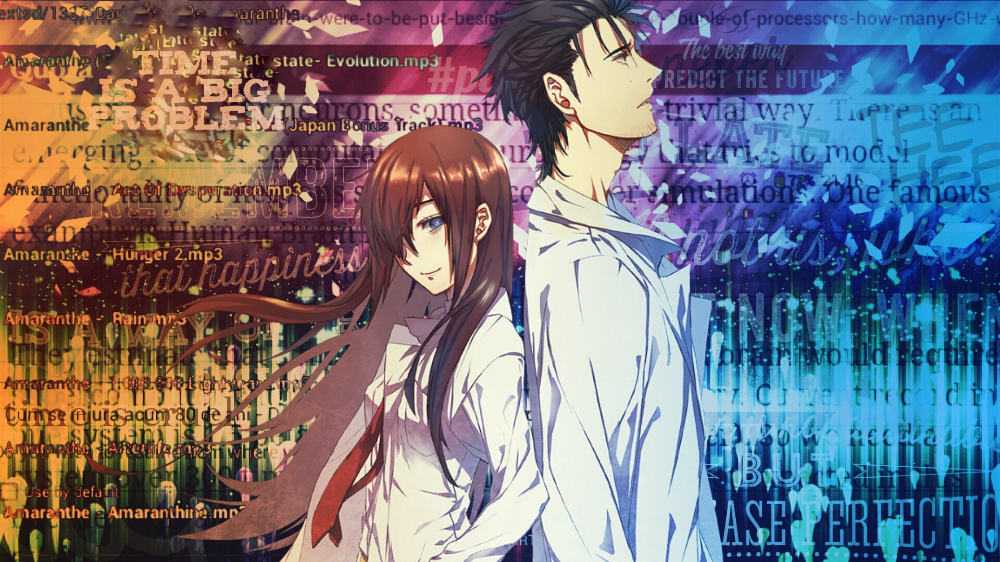
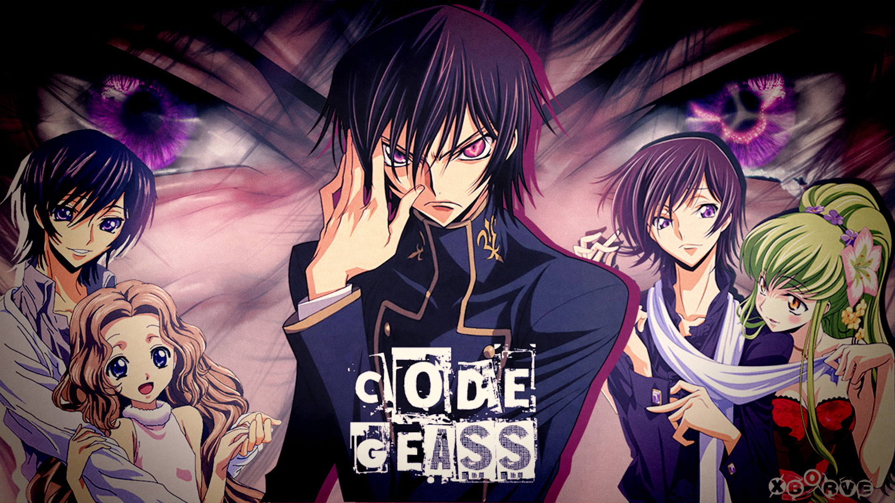

Death Note
The mystery and horror anime Death Note (デスノート),
weekly Shonen Jump from 2003 to 2006, is highly rated by both domestic and international anime fans. It is so popular worldwide partly because the anime is completed with the relatively short story (37 episodes) in addition to the well-elaborated storyline
The protagonist Light Yagami finds a Death Note which makes people die if their names are written on the note. You can enjoy watching of the high-level game of wits.
Air Dates: 2006-2007
Genre: Mystery
Recommended for Beginners/Anime Fans

Steins;Gate
Quite a few anime lovers look on Steins;Gate (シュタインズ・ゲート) as the best anime in recent years. The sci-fi anime’s 24 episodes were aired on TV in 2011, followed by Steins;Gate 0 (シュタインズ・ゲート ゼロ), the continuation of the story (but the timeline is past), in 2018. The main character Rintaro Okabe and other Future Gadget Laboratory members try to invent a kind of time machine, and the anime is known for its time loop plot. Many fans of Steins;Gate visit the town of the setting: Akihabara, Tokyo.
Air Dates: 2011-2018
Genre: Science Fiction, Time loop
Recommended for Anime Fans/Anime Freaks

Code Geass
The Code Geass Series, which is popular among anime fans all over the world, started with the first season Geass: Lelouch of the Rebellion (コードギアス 反逆のルルーシュ) in 2006-2007. The protagonist of the anime series Lelouch vi Britannia stands out in opposition to the gigantic the the Holy Britannian Empire after granted the supernatural power named Geass. The new story Code Geass Lelouchi of the Re;surrection (コードギアス 復活のルルーシュ) hit the big screen as an anime movie in 2019.
Air Dates: from 2006
Genre: Dark Fantasy, Mecha
Recommended for Anime Fans
Naruto Shippuden
Naruto (ナルト), the greatest anime with the theme of Ninja, was initially released as the Weekly Shonen Jump manga by Masashi Kishimoto in 1999 and run until 2014. The anime Naruto series was completed in 2017 after no less than 15 years, consisting of two titles: Naruto (NARUTO -ナルト-) aired in 2002-2007 and Naruto: Shippuden (NARUTO -ナルト- 疾風伝) aired in 2007-2017.
The setting of Naruto is the fictional world of Shinobi (Ninja), and the ineffective boy Naruto is growing by the help of many friends and masters there. Naruto and other Ninja characters battle with various Ninja techniques using the chakra energy.
Lots of anime’s essentials such as strong bonds with friends and family, betrayal and parting are represented in this anime. Many anime fans may pick out Naruto as the top of anime especially for foreign people, and it deserves it. Nevertheless, Naruto yields the top position to a certain new anime being released.
Air Dates: 2002-2017
Genre: Adventure, Action, Fantasy
Recommended for Beginners/Anime Fans
Erased
Erased,known in Japan as Boku dake ga Inai Machi (Japanese: 僕だけがいない街, lit. "The Town Where Only I Am Missing") and abbreviated as BokuMachi (僕街), is a Japanese manga series written and illustrated by Kei Sanbe. It was serialized in Kadokawa Shoten's Young Ace magazine from June 4, 2012 to March 4, 2016, and is licensed in English by Yen Press.[4][5] An anime adaptation by A-1 Pictures aired on Fuji TV's Noitamina programming block from January 8, 2016 to March 25, 2016, and a live action film was released on March 19, 2016. A live-action drama series was released by Netflix on December 15, 2017.[6]
A spin-off manga series following the lives of Satoru's friends was published from June 4, 2016 to November 4, 2016.[7] A spin-off novel series by Hajime Ninomae was released in Kadokawa's Bungei Kadokawa magazine from November 2015 to March 2016.
Air Dates: from 2016
Genre:Mystery, science fiction, thriller
Recommended for Anime Fans